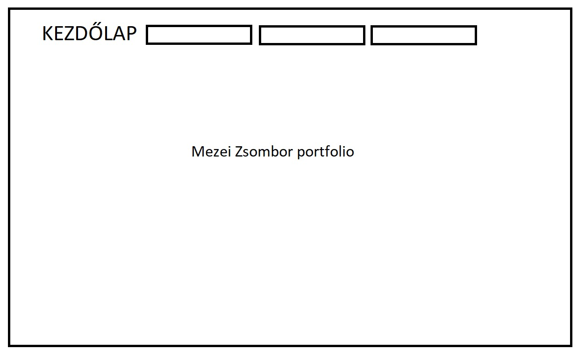
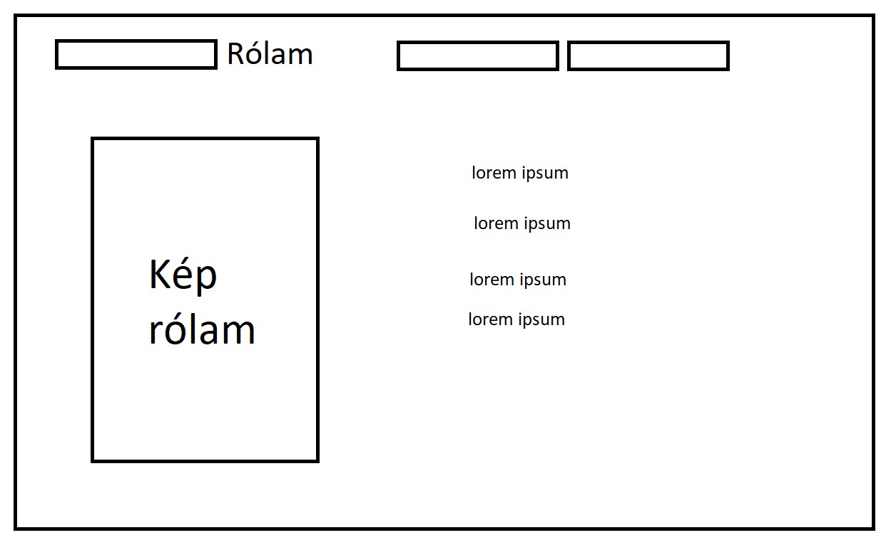
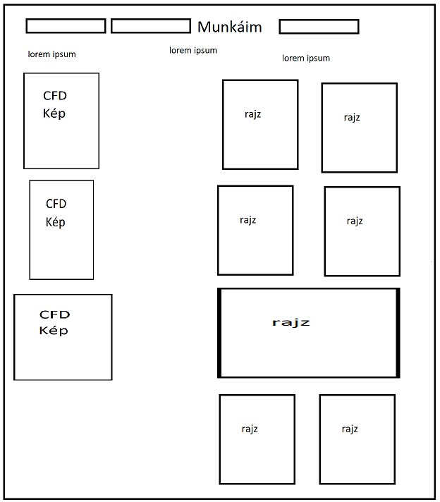

Egy olyan hátteret szerettem volna, ami, ha görgetünk, megy lejjebb. Ez sikerült is szerencsére. Az aloldalaknak egyszerű megjelenést szerettem volna, így talán könyebb befogadni is. Nehézséget a programozás jelentett. Érdekes feladat volt, hogy minden részét a feladatnak magunktól kellett kitalálni vagy megkeresni. Ez a tudás biztosan hasznos lesz a számomra, bár legközelebb inkább valami templatet használnék, nekem nem ez a hobbim vagy szakmám, másnak igen, neki jobban, gyorsabban és könnyebben megy. A legtöbb időbe az telt, hogy elsajátítsam a html programozás szükséges részét, csak utána tudtam elkezdeni a lényegi munkát. Jó feladat volt, bár tudom, hogy lehetne még szépíteni, csiszolgatni a kész oldalon. Segitséget természetesen a Youtube és a W3schools nyújtott.


